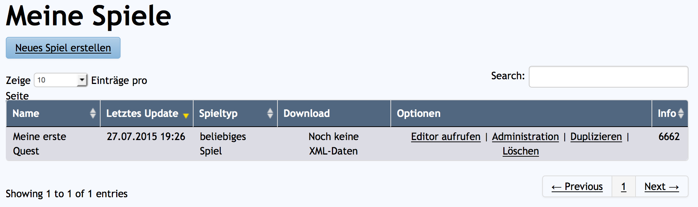
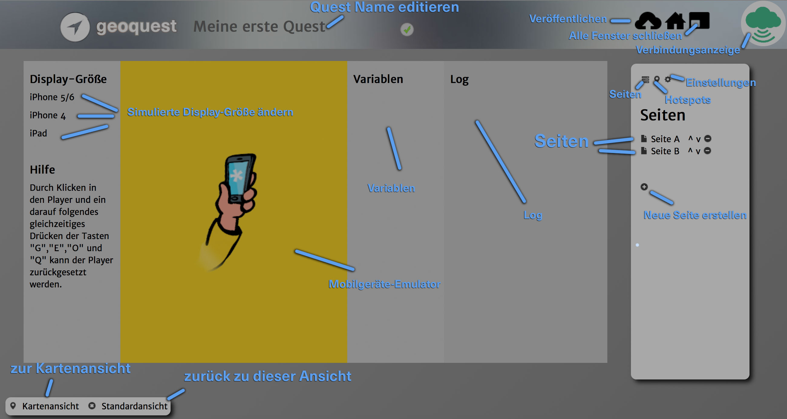
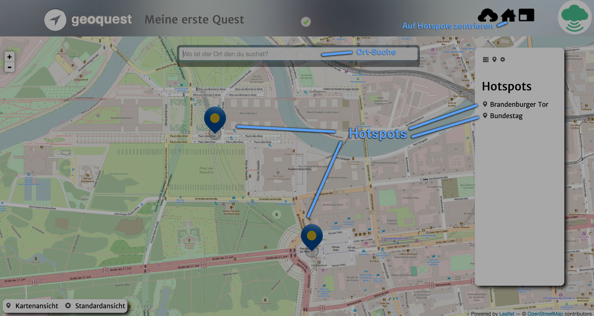

Nachdem wir nun die Grundlagen was eine Quest eigentlich ist gelernt haben, können wir nun endlich auf der "Meine Spiele"-Seite hinter unserer neu erstellten Quest auf "Editor aufrufen" klicken.

Die Seite, die sich nun öffnet ist der Quest-Editor, in dem du alle Komponenten einer Quest zusammenbauen kannst.
Lass dich nicht abschrecken. In den weiteren Tutorials werden wir alle wichtigen Funktionen erklären.
Außerdem ist hier eine Gesamtübersicht aller Buttons und Bereiche der Standardansicht:

Seitenleiste: Seiten/Hotspots/Einstellungen: Im Seitenmenü kannst du zwischen verschiedenen Tabs hin und her wechseln. Unter Seiten kannst du alle Seiten auflisten. Unter Hotspots kannst du alle Hotspots auflisten. Unter Einstellungen kannst du verschiedene Einstellungen, die für die gesamte Quest gelten einstellen.
Seiten-Liste: In der Seitenliste sind alle Seiten deiner Quest aufgelistet. Mit einem Klick auf dessen Namen kannst du das Fenster öffnen, in dem du die Seite editieren kannst.
Neue Seite erstellen: Mit einem Klick auf das Plus gelangst du zu einem Fenster, in dem du eine neue Seite erstellen kannst.
Mobilgeräte-Emulator: Hier kannst du deine Quest testen.
Simulierte Display-Größe ändern: Hier kannst du das Seitenverhältnis des simulierten Displays ändern.
Variablen: Während des Testens der Quest werden hier alle Variablen mit ihren aktuellen Werten aufgelistet.
Log: Während des Testens der Quest werden hier diverse Ausgaben zum aktuellen Status der Quest angezeigt.
Quest Name editieren: Mit einem Klick auf den Namen der Quest in der oberen Leiste, kannst du den Namen der Quest editieren.
Veröffentlichen: Mit einem Klick auf dieses Symbol kannst du deine Quest für die öffentliche geoquest-App oder deine eigene Portal-App vorbereiten.
Alle Fenster schließen: Mit einem Klick auf dieses Symbol kannst du alle geöffneten Fenster (z.B. für solche in denen Seiten bearbeitet werden).
Verbindungsanzeige: Die Wolke in der oberen rechten Ecke der Seite zeigt an, wie gut die Verbindung zum geoquest-Server ist. Da alle Eingabefelder in Echtzeit zu unserem Server übertragen werden, sollten Änderungen nur dann gemacht werden, wenn die Wolke grün oder gelb ist.
Zur Kartenansicht: Mit einem Klick auf diesen Link kannst du zur Kartenansicht wechseln.
Zur Standardansicht: Mit einem Klick auf diesen Link kannst du zu dieser Ansicht zurück.
Während du in der Kartenansicht bist, sieht die Seite so aus:

Hotspots: Sowohl durch Klicken auf die Hotspots in der Kartenansicht, als auch auf dessen Namen in der Hotspot-Liste, kannst du eine Ansicht öffnen, in der du den Hotspot editieren kannst.
Ort Suche: In dem Suchfeld am oberen Rand der Kartenansicht kannst du nach einem Ort suchen. Tippe den Namen des Ortes so präzise wie möglich ein, also z.B. "Brandenburger Tor Berlin".
Auf Hotspots zentrieren: Mit einem Klick auf dieses Symbol kannst du die Kartenansicht auf alle Hotspots zentrieren.